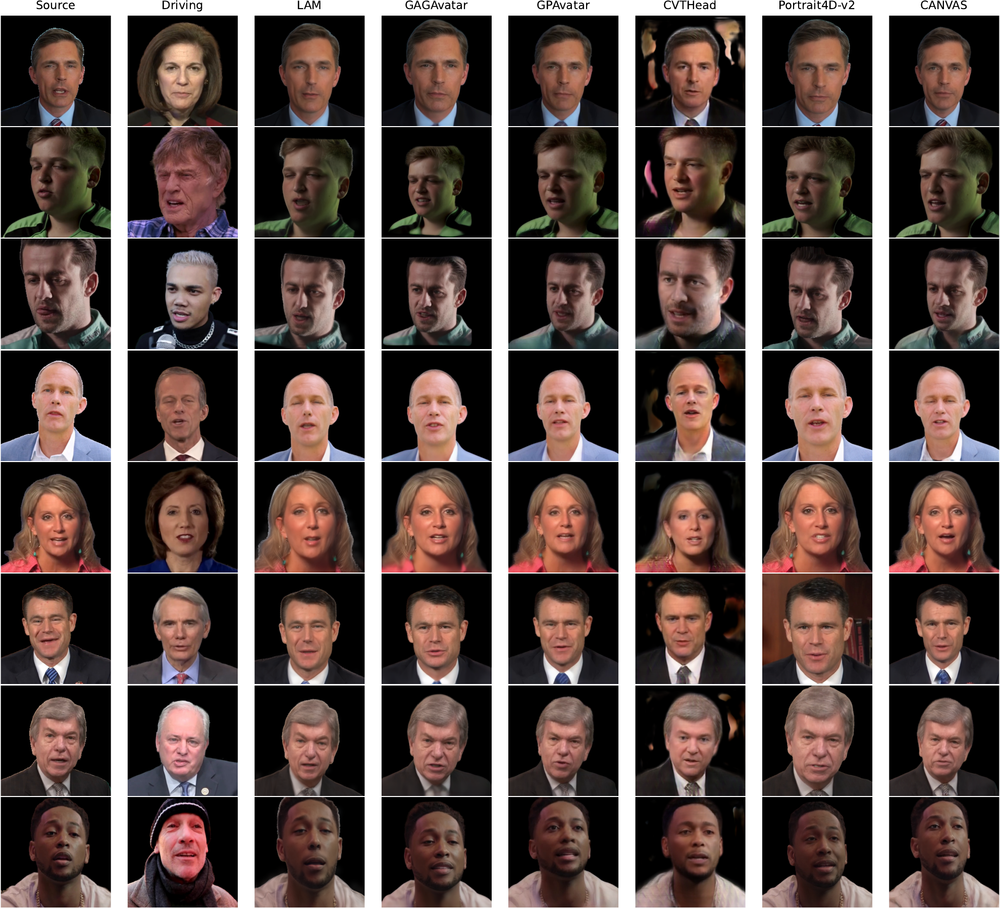
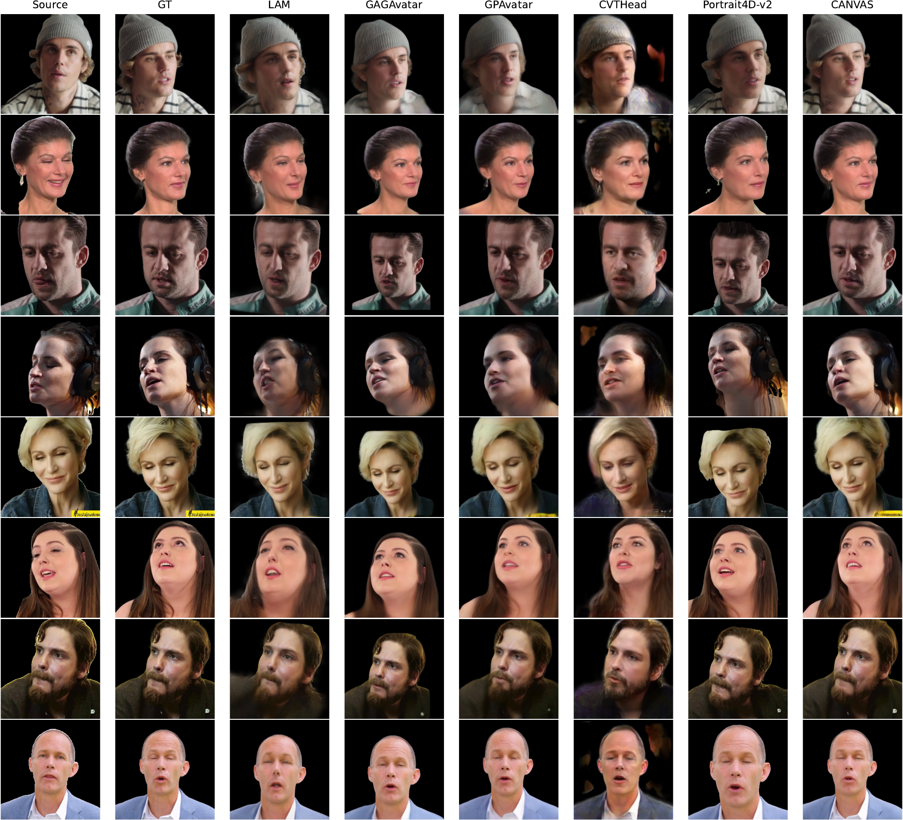

Cross Results
Cross-identity qualitative comparisons.
Anonymous Submission
Anonymous Authors
CANVAS reconstructs animatable 3D Gaussian head avatars from a variable number of source images, accumulating evidence from 1 to K views on a canonical Gaussian support for efficient reenactment.
Method Overview
Qualitative Figures

Cross-identity qualitative comparisons.

Self reenactment qualitative comparisons.
Video Library
Watch selected comparisons in a compact carousel layout.
BibTeX